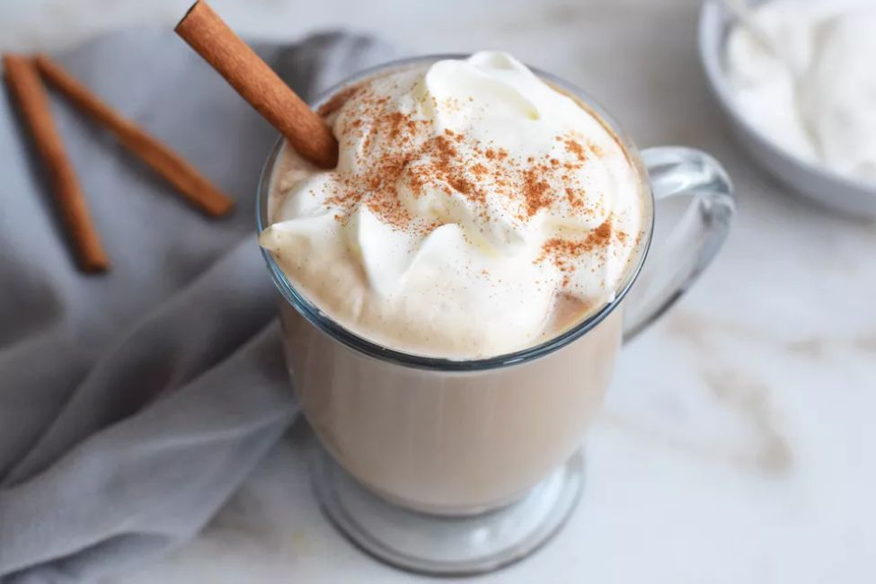
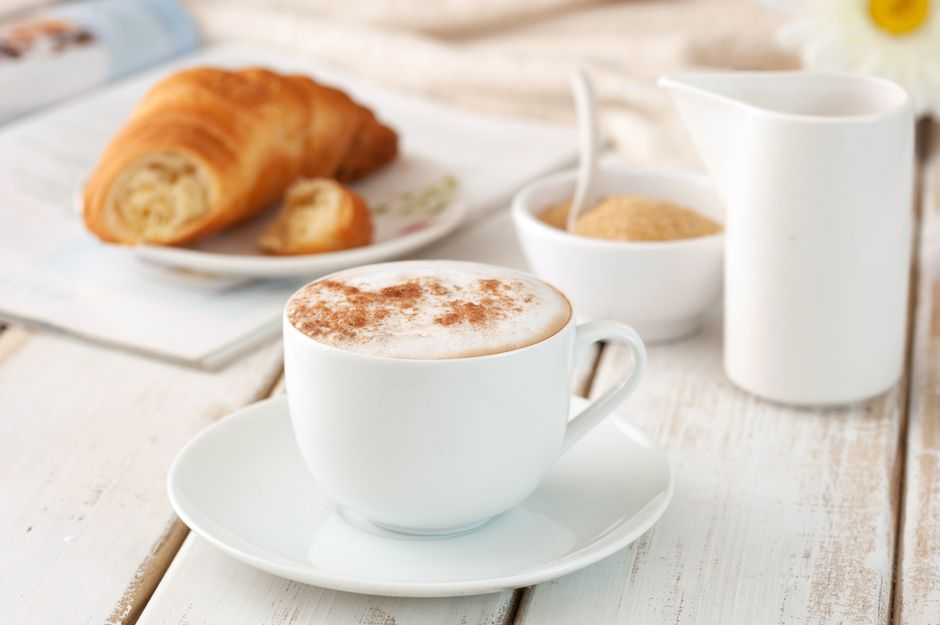
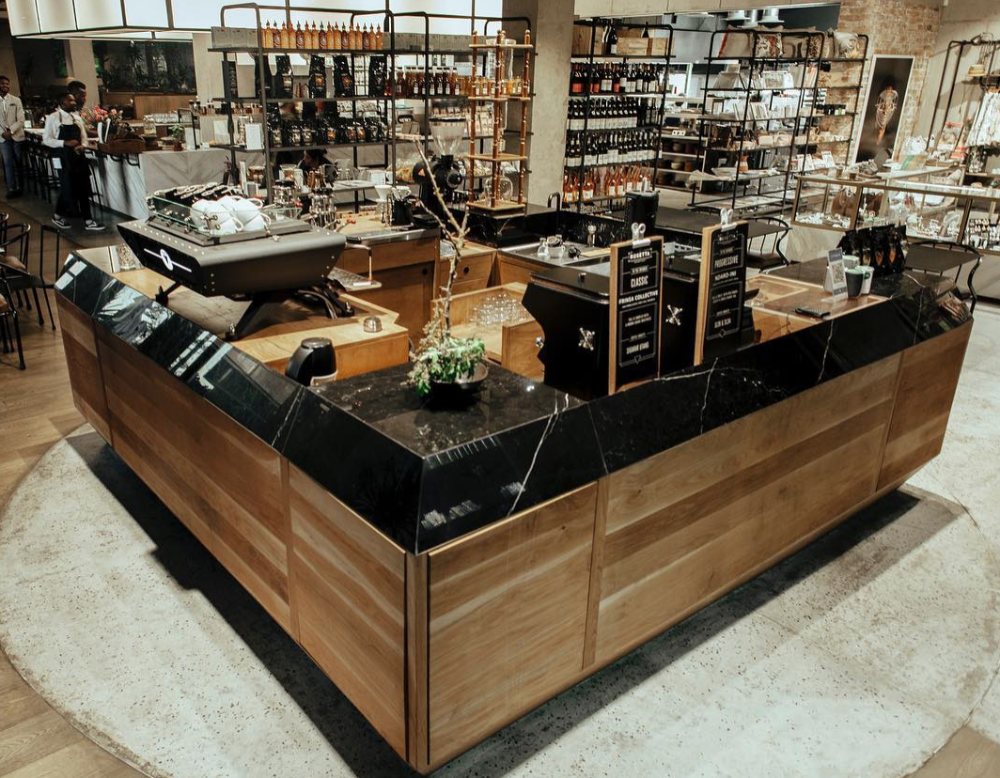
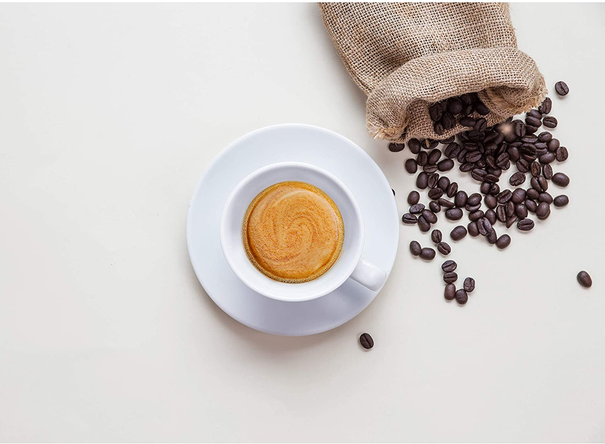
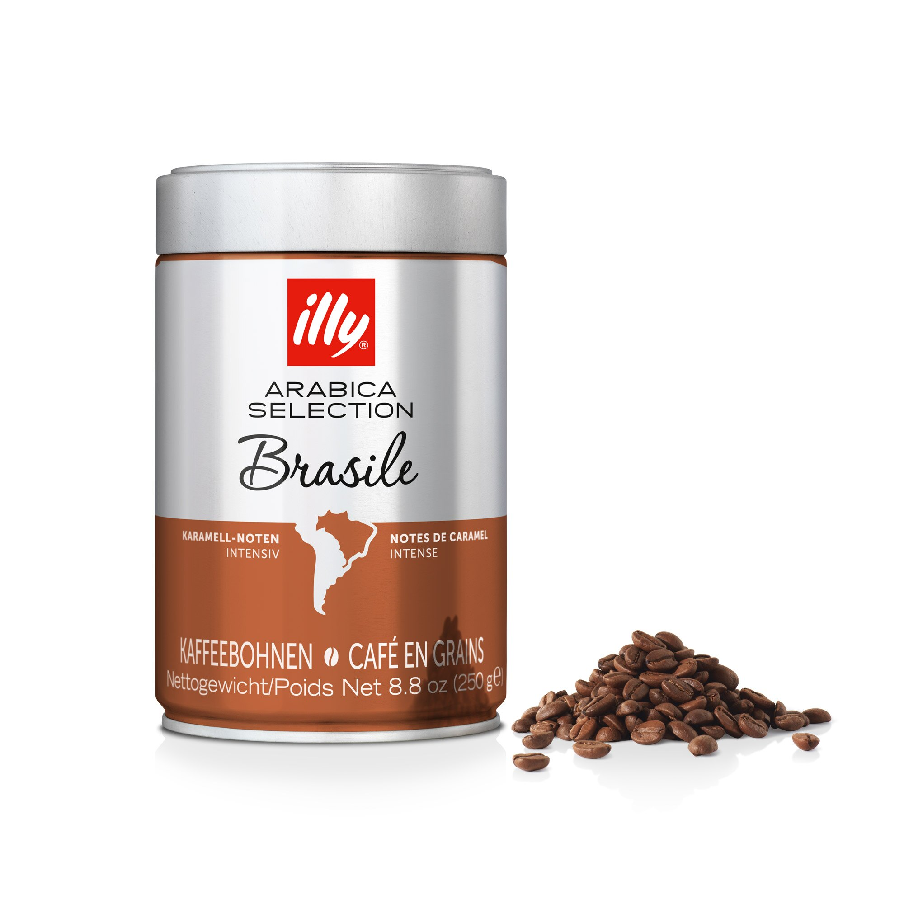

Coffee recipe of the week
Here you'll find this week's exotic recipe of coffee wou can make at home.
Coffee recipe of the week

A bistro-style cafe au lait is oh-so-French and a fantastic way to greet a
chilly morning.
Make it with equal parts steamed milk and strong hot coffee, for an easy, elegant breakfast with
flaky croissants.
Or enjoy it as they do at sidewalk cafes in Paris: as an afternoon treat with a square of dark
chocolate.
In France, equal parts of steamed milk and strong hot coffee are combined to make the perfect mellow
beverage known as a café au lait.
Prepare this easy recipe at home, and serve it at a traditional French breakfast with flaky
croissants, or as an after-brunch coffee with a single square of dark chocolate. Your guests will
think they've been transported to a sidewalk café in Paris.
 Coffee Shops you must visit in a lifetime
Coffee Shops you must visit in a lifetime
We present to you the best travel destinations to step up your coffee experience.
Coffee Shops you must visit in a lifetime

With most of the world now out of lockdown,
we can wave goodbye to takeaway cappuccinos and say hello to long,
leisurely mornings holed up in a cosy coffee shop. The third wave of coffee has
hit nearly every corner of the globe – and people are obsessed. We know as well
as anyone that finding the perfect cup of joe when travelling is as essential as
a good meal, bar or hotel so to help lend a helping hand we’ve scoured the globe
for the best coffee shops. Now in its third year, you’ll find some old favourites as well
as new up-and-coming joints promising the perfect caffeine fix. So, without further ado,
here are the 50 best coffee shops in the world in 2022.

What's so special about Brazilian coffee
Here you'll find out 5 things about Brazilian Coffee
Brazilian Coffee

The best Brazilian coffees have a relatively low acidity, and exhibits a nutty
sweet flavor, often bittersweet with a chocolaty roast taste. Most unroasted Brazilian green coffee is
dry processed (unwashed; natural).
The most favorable quality of a Brazilian coffee is its price - but after that, the mildness helps to
balance out more intense coffee beans, making it a feature of many blends.